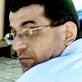

ЕРЕВАН. ФАКТИЧЕСКОЕ ОТКРЫТИЕ
«Я - Человек»
Южнокавказский кинофестиваль мира и прав человека
Несмотря на то, что столица Армении стала четвертым городом фестиваля, здесь состоялось его фактическое открытие. Как и полагается, церемония прошла в шикарной гостинице «Golden Tulip», с трибуной, с выступлениями и речами, с деятелями искусства, политиками, дипломатами, депутатами. И конечно же, море прессы и телекамер.
Но об открытии фестиваля чуть позже.
В Ереване я бывал не раз, потому рассказывать о нем что-то новое сложно. Наверное, как и повсюду, с каждым годом становится все больше автомобилей, все меньше советских и российских. Дороги тоже постепенно ремонтируются. Город отстраивается. Например, в самом центре Еревана напрочь исчез старый район. Теперь тут стоят элитные здания, облицованные розовым туфом. Как говорят, квартиры в них стоят дико дорого и потому их покупают в основном представители диаспоры.
А раньше на этом месте стояли небольшие, максимум в три этажа, каменные домики начала прошлого века. Увы, строительный бум сожрал их практически без остатка.
В эти дни в Ереване отмечали семнадцатилетие независимости. Потому город был наводнен гостями и иностранными делегациями. Отмечали эту праздничную дату, как и повсюду на Кавказе – торжественными речами, фейерверками, концертами и массовыми гуляниями.
Но об открытии фестиваля чуть позже.
В Ереване я бывал не раз, потому рассказывать о нем что-то новое сложно. Наверное, как и повсюду, с каждым годом становится все больше автомобилей, все меньше советских и российских. Дороги тоже постепенно ремонтируются. Город отстраивается. Например, в самом центре Еревана напрочь исчез старый район. Теперь тут стоят элитные здания, облицованные розовым туфом. Как говорят, квартиры в них стоят дико дорого и потому их покупают в основном представители диаспоры.
А раньше на этом месте стояли небольшие, максимум в три этажа, каменные домики начала прошлого века. Увы, строительный бум сожрал их практически без остатка.
В эти дни в Ереване отмечали семнадцатилетие независимости. Потому город был наводнен гостями и иностранными делегациями. Отмечали эту праздничную дату, как и повсюду на Кавказе – торжественными речами, фейерверками, концертами и массовыми гуляниями.
ТОК - ШОУ С ГЛУБОКИМ ДЕКОЛЬТЕ

Организатор фестиваля Эдвард Антинян
лидер Либерально - Прогрессивной партии Армении
лидер Либерально - Прогрессивной партии Армении
В Ереване, как и в Ванадзоре, нами заинтересовалось местное телевидение – телеканал «Еркир Медиа». Как мне объяснили, это независимый телеканал, подконтрольный «конструктивной оппозиции», то есть, партии Дашнакцутюн.
Темой ток-шоу стали августовские события в Грузии и все остальное, так или иначе связанное с ними. Кроме автора этих строк, в действе принимали участие – руководитель КЦМИ Георгий Ванян, журналист грузинской газеты «Messenger» Темури Кигурадзе, раненный во время боевых действий в Цхинвали и лидер Либерально-Прогрессивной партии Армении Эдвард Антинян.
В студии было жарко и душно. Может быть потому у ведущего сквозь толстый слой грима на лице проступали капли пота. Но мне показалось, что он немного волновался.
Ведущий спрашивал об августовской войне и ситуации в Грузии у нас с Темури. Мы послушно отвечали на вопросы. Потом перешли на Джавахети. Говорил в основном ведущий и господин Антинян. Когда Эдвард Антинян использовал в своем лексиконе слово «Джавахети», ведущий прервал его и поправил: «Джавахк!» Лидер, судя по названию, прогрессивной партии, либерально согласился с поправкой ведущего. Больше слова «Джавахети» в его речи не звучало.
В свою очередь, господин Ванян попытался внести ясность в использовании названий. Предложил именовать обсуждаемый регион Грузии именно как Джавахети. Ведущий покивал напудренной головой и на этом съемки закончились.
Через пару дней мы сидели в гостиничном номере и смотрели это ток-шоу. Независимый телеканал выпустил передачу в достаточно «декольтированном» виде. В блоке, содержащем ответ на вопрос, кто виноват в августовской войне в Грузии, были напрочь вырезаны все упоминания о наиболее заинтересованной в конфликте «третьей стороне». При этом стоит сказать, что данная сторона упоминалась при ответе именно в таком абстрактном виде без упоминания страны и ее географического расположения.
Но на этом вырезы не закончились. Не осталось в ток-шоу и следа от предложения господина Ваняна именовать Джавахети как Джавахети.
Темой ток-шоу стали августовские события в Грузии и все остальное, так или иначе связанное с ними. Кроме автора этих строк, в действе принимали участие – руководитель КЦМИ Георгий Ванян, журналист грузинской газеты «Messenger» Темури Кигурадзе, раненный во время боевых действий в Цхинвали и лидер Либерально-Прогрессивной партии Армении Эдвард Антинян.
В студии было жарко и душно. Может быть потому у ведущего сквозь толстый слой грима на лице проступали капли пота. Но мне показалось, что он немного волновался.
Ведущий спрашивал об августовской войне и ситуации в Грузии у нас с Темури. Мы послушно отвечали на вопросы. Потом перешли на Джавахети. Говорил в основном ведущий и господин Антинян. Когда Эдвард Антинян использовал в своем лексиконе слово «Джавахети», ведущий прервал его и поправил: «Джавахк!» Лидер, судя по названию, прогрессивной партии, либерально согласился с поправкой ведущего. Больше слова «Джавахети» в его речи не звучало.
В свою очередь, господин Ванян попытался внести ясность в использовании названий. Предложил именовать обсуждаемый регион Грузии именно как Джавахети. Ведущий покивал напудренной головой и на этом съемки закончились.
Через пару дней мы сидели в гостиничном номере и смотрели это ток-шоу. Независимый телеканал выпустил передачу в достаточно «декольтированном» виде. В блоке, содержащем ответ на вопрос, кто виноват в августовской войне в Грузии, были напрочь вырезаны все упоминания о наиболее заинтересованной в конфликте «третьей стороне». При этом стоит сказать, что данная сторона упоминалась при ответе именно в таком абстрактном виде без упоминания страны и ее географического расположения.
Но на этом вырезы не закончились. Не осталось в ток-шоу и следа от предложения господина Ваняна именовать Джавахети как Джавахети.
ФЕСТИВАЛЬ
Армен Ашотян
депутат парламента, член правящей Республиканской партии Армении
депутат парламента, член правящей Республиканской партии Армении


А теперь вернемся в гостиницу «Golden Tulip» в день открытия фестиваля. Как я уже говорил, общество в тот день собралось многочисленное и солидное. Присутствующие пили кофе и чай, общались. Тусовались, в общем. Политики и депутаты после выступлений и красивых слов о толерантности и мире с удовольствием раздавали интервью. Журналисты кучками перебегали от дипломатов к депутатам и местной богеме.
Руководитель образовательного центра «Мхитар Себастиаци» Ашот Блеян затронул тему «возмутительных» международных конфликтов соседних с Арменией стран. По его мнению, подобные фестивали помогут народам лучше узнать и понять друг друга, что может способствовать в будущем предотвращению конфликтов.
Ереванский со-организатор фестиваля, руководитель общественной организации «Демпрос», а заодно и лидер политической Либерально-Прогрессивной партии Эдвард Антинян сказал о том, что необходимо в чужих конфликтах, проблемах увидеть самого себя. Чтобы чужие конфликты послужили причиной для обсуждения армяно-азербайджанских и армяно-турецких проблем и конфликтов.
Но самое интересное заявление сделал председатель постоянной комиссии парламента Армении по делам науки, просвещения, культуры, спорта и молодежи, член правящей Республиканской партии Армен Ашотян.
«Молодежь не только нуждается в правительственной, культурной и социальной политике, но нуждается и в национальном отношении к себе и национальном образовании», - начал он.
Затем этот спортивного сложения молодой человек с бритой головой с трибуны простер руку в сторону афиши фестиваля. «С этой точки зрения девиз сегодняшнего фестиваля «Я человек» несомненно важен, но думаю, что не менее важно для молодежи, живущей в Армении понятие «Я – армянин», где слово армянин придает не меньший авторитет, звучание, оттенок жизни и образу мышления каждого молодого человека», - провозгласил он.
Большинство присутствующих автоматически еще раз прочло эти же слова на афише. Ашотян пожелал успехов фестивалю и продолжил: «Я думаю, что молодые люди, которые будут иметь возможность в течение этих трех дней посмотреть соответствующие документальные фильмы, тем не менее, не будут забывать о том, что национальный компонент в воспитании молодежи не менее важен, чем гражданское воспитание».
Покинув трибуну, Ашотян дал пару-другую коротких интервью, как я понимаю, именно на тему «национальных компонентов» в воспитании и национальных понятий и удалился.
После Ашотяна еще выступали, но речи других ораторов казались серыми и стандартными на фоне яркой и незабываемой речи депутата, республиканца, спортсмена.
Поскольку центральный холл отеля был забит практически до отказа, мне стало интересно, как все пришедшие вместятся в относительно небольшой зал для просмотров фильмов. Мои опасения были напрасными. Откушав кофе, политики, дипломаты, депутаты, деятели искусства и пресса по-английски незаметно покинули шикарную гостиницу. Осталась, как и всегда в основном, наиболее активная часть общества – студенты.
Руководитель образовательного центра «Мхитар Себастиаци» Ашот Блеян затронул тему «возмутительных» международных конфликтов соседних с Арменией стран. По его мнению, подобные фестивали помогут народам лучше узнать и понять друг друга, что может способствовать в будущем предотвращению конфликтов.
Ереванский со-организатор фестиваля, руководитель общественной организации «Демпрос», а заодно и лидер политической Либерально-Прогрессивной партии Эдвард Антинян сказал о том, что необходимо в чужих конфликтах, проблемах увидеть самого себя. Чтобы чужие конфликты послужили причиной для обсуждения армяно-азербайджанских и армяно-турецких проблем и конфликтов.
Но самое интересное заявление сделал председатель постоянной комиссии парламента Армении по делам науки, просвещения, культуры, спорта и молодежи, член правящей Республиканской партии Армен Ашотян.
«Молодежь не только нуждается в правительственной, культурной и социальной политике, но нуждается и в национальном отношении к себе и национальном образовании», - начал он.
Затем этот спортивного сложения молодой человек с бритой головой с трибуны простер руку в сторону афиши фестиваля. «С этой точки зрения девиз сегодняшнего фестиваля «Я человек» несомненно важен, но думаю, что не менее важно для молодежи, живущей в Армении понятие «Я – армянин», где слово армянин придает не меньший авторитет, звучание, оттенок жизни и образу мышления каждого молодого человека», - провозгласил он.
Большинство присутствующих автоматически еще раз прочло эти же слова на афише. Ашотян пожелал успехов фестивалю и продолжил: «Я думаю, что молодые люди, которые будут иметь возможность в течение этих трех дней посмотреть соответствующие документальные фильмы, тем не менее, не будут забывать о том, что национальный компонент в воспитании молодежи не менее важен, чем гражданское воспитание».
Покинув трибуну, Ашотян дал пару-другую коротких интервью, как я понимаю, именно на тему «национальных компонентов» в воспитании и национальных понятий и удалился.
После Ашотяна еще выступали, но речи других ораторов казались серыми и стандартными на фоне яркой и незабываемой речи депутата, республиканца, спортсмена.
Поскольку центральный холл отеля был забит практически до отказа, мне стало интересно, как все пришедшие вместятся в относительно небольшой зал для просмотров фильмов. Мои опасения были напрасными. Откушав кофе, политики, дипломаты, депутаты, деятели искусства и пресса по-английски незаметно покинули шикарную гостиницу. Осталась, как и всегда в основном, наиболее активная часть общества – студенты.
ДОРОГА НА ЮГ
Опять дорога. На сей раз прямая стрела трассы сквозь Араратскую долину. Слева и справа – горы арбузов, дынь, яблок и прочих фруктов. Иногда попадались ржавые бока металлических баков, украшеные надписью «Живая рыба». И поля, сады, бахчи...
У юго-восточной границы Араратской долины развилка. Налево – дорога в сторону нашей очередной цели - города Ехегнадзор. Далее уже идет Карабах. Трасса в хорошем состоянии. Дорога направо – растрескавшийся асфальт в рытвинах и глубоких ямах. Там, где-то около горизонта – Нахичевань. А значит, далее глухой тупик.
Останавливаемся около ряда импровизированных минимаркетов, построенных из подручных материалов купить минералки и размять ноги. Георгий Ванян подходит к парочке парней, режущихся в нарды у магазина. Между ними завязывается разговор. Приведу коротко его перевод.
- Куда едете, в Карабах?, - интересуются ребята.
- В Ехегнадзор, - объясняет Георгий.
- А это иностранцы с тобой?
- Нет, соседи наши – грузины.
- Да, издалека приехали...
- Вы что, Грузия же, она совсем рядом! – в свою очередь удивляется Георгий. – Вы что, никогда там не бывали?
- Никогда, - соглашаются они. – Это же страшно далеко отсюда, несколько тысяч километров.
- Нет! Из Еревана езды всего несколько часов до Тбилиси, около 300 километров.
- Не может быть, неужели так близко!? – искренне удивляются игроки. И тут же предлагают сыграть в нарды с грузинами...
Мы ссылаемся на нехватку времени и едем дальше. В последний город Армении, в котором пройдет последняя неделя фестиваля «Я - человек».
Репортаж Ираклия Чихладзе
Ереван - Араратская долина
Сентябрь 2008
Опубликовано: 23-01-09
Фестиваль мира и прав человека в Армении проведен Кавказским Центром Миротворческих Инициатив при поддержке Фонда содействие Евразия - Армения за счет средств Агентства США по международному развитию - USAID
У юго-восточной границы Араратской долины развилка. Налево – дорога в сторону нашей очередной цели - города Ехегнадзор. Далее уже идет Карабах. Трасса в хорошем состоянии. Дорога направо – растрескавшийся асфальт в рытвинах и глубоких ямах. Там, где-то около горизонта – Нахичевань. А значит, далее глухой тупик.
Останавливаемся около ряда импровизированных минимаркетов, построенных из подручных материалов купить минералки и размять ноги. Георгий Ванян подходит к парочке парней, режущихся в нарды у магазина. Между ними завязывается разговор. Приведу коротко его перевод.
- Куда едете, в Карабах?, - интересуются ребята.
- В Ехегнадзор, - объясняет Георгий.
- А это иностранцы с тобой?
- Нет, соседи наши – грузины.
- Да, издалека приехали...
- Вы что, Грузия же, она совсем рядом! – в свою очередь удивляется Георгий. – Вы что, никогда там не бывали?
- Никогда, - соглашаются они. – Это же страшно далеко отсюда, несколько тысяч километров.
- Нет! Из Еревана езды всего несколько часов до Тбилиси, около 300 километров.
- Не может быть, неужели так близко!? – искренне удивляются игроки. И тут же предлагают сыграть в нарды с грузинами...
Мы ссылаемся на нехватку времени и едем дальше. В последний город Армении, в котором пройдет последняя неделя фестиваля «Я - человек».
Репортаж Ираклия Чихладзе
Ереван - Араратская долина
Сентябрь 2008
Опубликовано: 23-01-09
Фестиваль мира и прав человека в Армении проведен Кавказским Центром Миротворческих Инициатив при поддержке Фонда содействие Евразия - Армения за счет средств Агентства США по международному развитию - USAID